No feedback found for this session
Conditions in Power Automate
skills
intermediate
Power Automate
Prerequisites for this session
- good general digital skills
- prior experience of writing your own Flows in Power Automate
- appropriate M365 access and permissions for Power Automate, Teams, and OneDrive
Introduction
- Control flow is the technical term that coders use to describe software that changes its behaviour depending on circumstances.
- This session looks at using variables and conditions to do control flow in Power Automate
Plan
- We’ll build a series of H&SC-relevant mini-projects:
- connecting to a OneDrive folder
- counting files in that folder
- posting a count of those files in a Teams message
- varying the text of that Teams message by count
- varying the content of that Teams message by the time of day (or day of week…)
Project one: connect with a OneDrive folder
- we’ll start with a very basic Flow that connects to a directory of files in your OneDrive.
Setup
- download the sample files, and extract to your OneDrive
- or, create a directory in your OneDrive containing some text files, labelled
0.txt,1.txt,2.txt…9.txt - create a new instant flow
- after the
Manually trigger a flowbox, add aList files in folderconnector
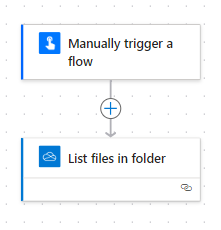 - supply the address of your directory of text files in the
List files in folderconnector - save and test your flow
Tip
- don’t expect any interesting output, but do run this flow to check for errors and permissions
- in the next project, we’ll collect part of the information that Power Automate makes available about your files
- Power Automate has connectors for most network/cloud file storage platform, so this approach should be adaptable to whatever platform you use
Project two: counting files
- we’ll now update that flow to count the number of files in the folder
- we’ll need to create variables to hold that number
- in later stages, we’ll then pass that count variable into some useful output (like a Teams message)
Task
- add an
Initialize variableblock
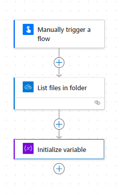 - now populate the
Initialize variablefields as shown below:
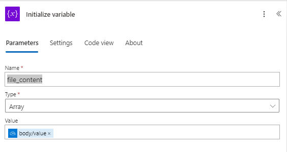- give your variable a name:
file_content - set the type, which tells Power Automate what sort of value to expect:
array - finally, set a starting value:
body/value
- give your variable a name:
- we now have our
file_contentvariable that contains all our file info - in a real flow, we’d probably want to put other parts of that to use
- but in this simple example, we’ll just count the number of entries (= the number of files in our directory)
Task
- add a second
Initialize variableblock - populate the fields as shown below:
- give your variable a name:
file_count - set the type, which tells Power Automate what sort of value to expect:
integer - finally, set a starting value. That’s more involved than the previous variable: you need to write a formula to calculate the length of your file_content -
length(variables('file_content'))
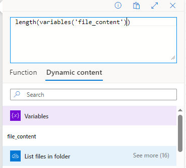
- give your variable a name:
- that should leave you with a flow like the following, which you should save and test:
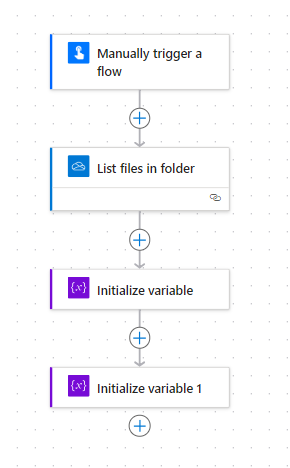 - once run, you should see that the value of
file_countis 10
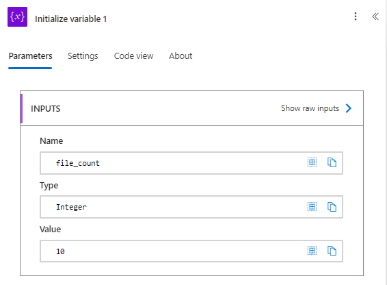
Digression: data types
- a note on data types: Power Automate has several different built-in data types:
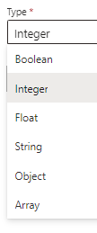 - Power Automate is inflexible about data types: so, for example, if you accidentally try to set an integer to 2.4, your flow will fail
- you’ll need to think carefully about what sort of value your variable is intended to hold
Project three: posting a count of those files in a Teams message
This one should be easy! At least, once you’ve been added to the KIND test Team…
Task
- add a
Post message in a chat or channelconnector - populate the fields - it’s recommended to post as
Useras this allows you to edit any embarrasing errors in your posts once they’ve been posted - for the message, write some suitable text, then include the file_count variable
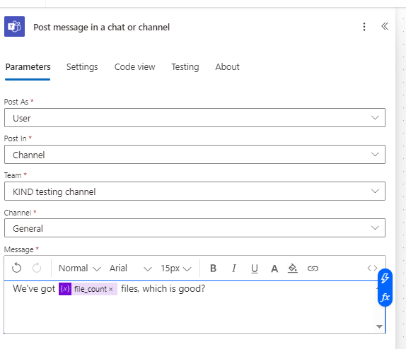
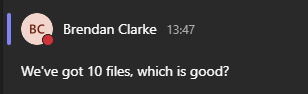
Project 4: varying the text of that Teams message by count
- so far, our message just repeats the contents of
file_countwith a bit of static text - we can use a Condition to change the text that accompanies that value
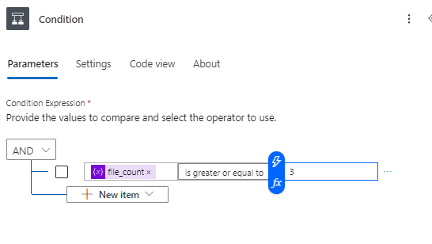 - we should be able to adapt our previous flow to use that condition
Project 5: varying text by time of day
- we could now add another variable to our flow
- this will set a value based on the time of day
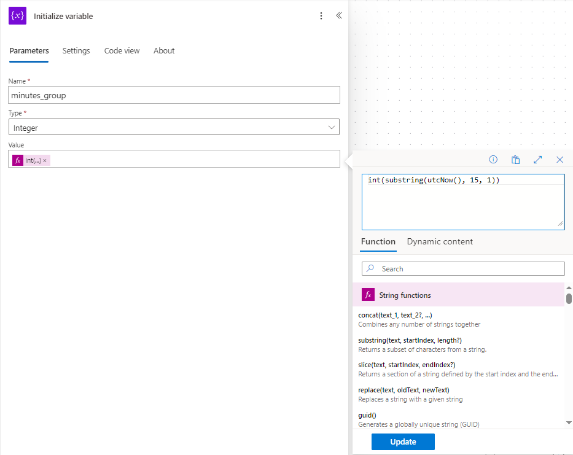 - we can set our condition to use this variable instead of
file_count